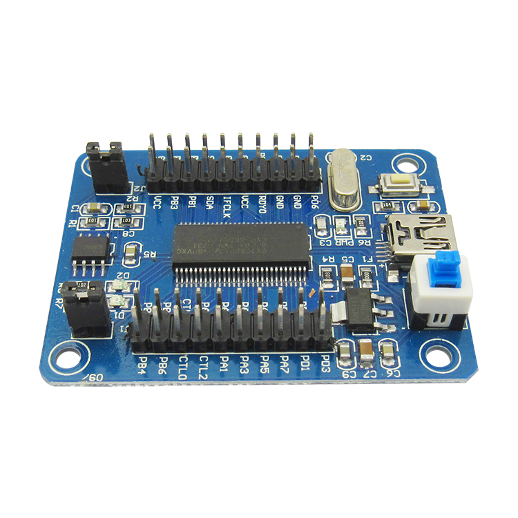
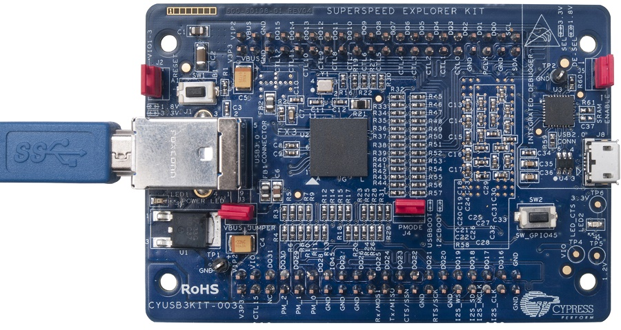
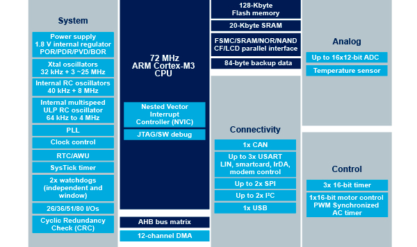
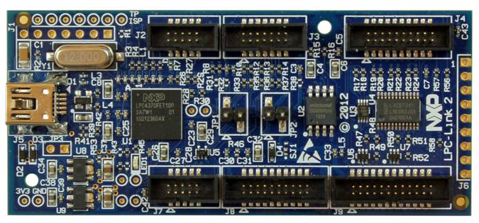

本页面简单介绍了我的USB开发计划，并且按照不同的分类列出了关于USB协议的文章。
原创文章，转载请注明出处：MetroCores, www.metrocores.com.
USB简介
众所周知，USB接口是目前最通用的外设接口，没有之一。迄今为止，USB已经走过了20多个年头，从刚开始的USB 1.0(1.5 Mbps)到现在的USB 3.1(10 Gbps)，虽然速度差了三四个数量级，但相互之间仍然可以兼容——这正是USB标准长盛不衰的秘诀之一。无论什么时候研究USB都不会过时。
但是，或许因为USB实在是太过universal了，USB标准的内容到现在已经变得非常庞杂。我们来列举一下使用了USB接口的（标准）设备：
- 手机，包括数据传输和充电
- 计算机的大部分外设，例如键盘、鼠标、U盘等，这些外设大多支持即插即用(Plug and Play)
- USB Hub，将一个USB接口扩展为多个，并且可以使用其他电源
- 车载设备(USB Car Kit)，可以复用USB接口进行UART协议的传输
- 其他兼容性用途
可以看到，USB标准需要兼顾到各个方面的设计，从硬件到软件都需要合理设计才能符合标准的要求。不过，随着各式各样的IC、SoC和开发套件的发布，开发者需要考虑的事情越来越少了。现在，我们就将关注的重点放在USB的核心——即USB传输协议上面，剩下的就丢给硬件工程师完成就行了。（硬件工程师：mmp）
当然，就传输协议而言，USB也不是个善茬。我们可以将USB设备分为两类，分别为“即插即用”（看协议标准看得抓狂）和“非即插即用”（写独占驱动写得扎心），分别对应了通用型设备和专用型设备。其实这么做也是可以理解的：像U盘这样的外设，让用户自己找驱动装简直是反人类，更不用说刚买的键盘鼠标连用都没法用还怎么去操作电脑（滑稽）；但是操作系统也没有义务支持像FPGA调试器这样的设备，就算支持了驱动也很难维持在最新版本。
说句实在话，我们很难想象当时的开发人员是怎样开发USB设备的。现在，不仅有跨平台编写的通用驱动（例如libusb），还有各种各样极为廉价的支持USB的SoC（例如STM32F103），更有完整的工具和代码支持。USB的开发已经越来越简单了，而且做出来插电脑就能用，还是很有成就感的。
其实选择先研究USB是有原因的，一个是CY7C68013A是我开发计划中唯一一个8051单片机，而有关ARM单片机的研究，我打算放到Cortex-M架构研究之后再谈；另一个是用CY7C68013A可以做个简单的逻辑分析仪，可以用来分析中低速协议的波形。我是不是很聪明呢？
可选的解决方案
USB的解决方案可谓是百花齐放，覆盖了各个层次。既有适合进行大量数据传输的设备，也有适合低带宽的控制型设备。
Cypress EZ-USB
在众多USB解决方案中，Cypress的EZ-USB系列可谓是独树一帜。该系列主要面向大数据量的数据传输，随着方案的不同，可以提供MIPI、SD等接口，但最受欢迎的还是GPIF接口。配合FPGA/CPLD，可以完成各种复杂协议的模拟（当然速度不能快过USB的传输速度啦），而且成本低廉，可以在数百元的价位上搞定，可谓是某些特殊应用的“救星”。举个例子，Xilinx的Platform Cable USB（也就是那个下载器）就是CY7C68013A + Xilinx CPLD的方案，成本不到100。
目前，EZ-USB的主流方案有两个，一个是EZ-USB FX2LP（例如CY7C68013A），一个是EZ-USB FX3（例如CYUSB3300），分别对应了USB 2.0 HS和USB 3.0 SS。前者可以直接在淘宝上购买，大概20多块（虽然听说CY7C68013A有假货）；后者则建议直接购买官方的CYUSB3KIT-003 EZ-USB® FX3™ SuperSpeed Explorer Kit套件，虽然价格有点小贵（300多），但是板上自带了J-Link调试器，而且比淘宝的大多数套件都要便宜，因此有兴趣也可以买个玩玩。不管选择的是哪种套件，都有现成的文档、工具和测试应用，即使是初学者也能迅速入门。


优点：
- 价格低廉，通常仅为通用型方案的几分之一
- GPIF的功能强大，而且配合设计工具配置难度不高
- 开发目的性强，适合搭配FPGA使用
- 开发流程短，文档和工具齐全
缺点：
- CPU性能较同类产品偏低，难以单独完成复杂逻辑
- 片上资源少，仅支持I2C、UART（不包括56引脚的EZ-USB FX2LP）、I2S（仅EZ-USB FX3）、SPI（仅EZ-USB FX3），没了
- 只有EZ-USB FX3支持OTG，还是USB 2.0 HS，还是老老实实当外设用吧
（不过看在CPU确实不行的份上，忍了） - EZ-USB FX2LP系列无调试功能，毕竟51单片机嘛
支持USB 2.0 FS的单片机
看清楚，虽然写着USB 2.0，但还有一个FS(Full Speed = 12 Mbps)，速度还是比较低的，对于单片机来说完全没有问题（毕竟都是3.3V，谁怕谁呀）。
USB 2.0 FS作为中低端单片机的常见外设已经是见怪不怪了。目前最受欢迎的STM32F103单片机正是价格最便宜的、带USB 2.0 FS的Cortex-M3系列单片机。虽然也有更为廉价的解决方案，但是STM32F103的价格也并不高（特别是在神奇的淘宝上），并且广泛应用于鼠标、USB音箱等设备上。而且STM32还有杀招：STM32Cube，可以大大简化开发工作，同样非常适合新手入门。
很明显，像STM32F103这类单片机，最适合的工作就是作为低速通用型设备使用，也就是说需要配合设备类(USB Class)的相关协议。当然，利用丰富的外设，做个读卡器什么的也不是不可以，ST Link V2就是基于STM32F103做成的（所以淘宝山寨货的价格也非常低，不到20），实现起来一样不麻烦。至于对传输速度有要求的应用，那就不好意思了。

优点：
- 价格同样低廉
- CPU性能足够，可以用于复杂控制
- 片上资源丰富，方便进行其他功能设计
- 开发流程短，文档和工具齐全
- 调试方便
缺点：
- USB速度较低，不适合大数据量的传输
支持USB 2.0 HS的单片机
支持USB 2.0 HS的单片机基本上都是高端系列的了，价格可能比一些Cortex-A系列的SoC还要贵上不少。当然，这类单片机一般卖的是外设和低功耗，硬件设计一般也会方便一些，可以说是各取所需吧。有的单片机直接内置了USB 2.0 HS PHY，而有的还需要加上ULPI接口的PHY（没错我说的就是你STM32），使用起来倒是不麻烦。
这类解决方案通常应用不算广泛，但在特定范围内可能是无可替代的。举个例子，NXP的LPC 4300系列就是外设有特点的典型，不仅支持SGPIO，可以用来模拟串行总线协议（这很FPGA），而且更是在LPC4370中内置了80 MHz的12位ADC。J-Link V10正是使用了LPC4337单片机。很明显，这类单片机的USB接口的作用基本上都是快速传输大量数据。

由于这类单片机的应用范围较窄，因此不再提及优缺点。
支持USB 2.0/3.0的高性能SoC
这里的高性能SoC，指的主要是使用Cortex-A系列CPU的SoC。这类SoC通常运行操作系统，因此USB主要作为主机控制器(Host Controller)使用，一般需要相应的协议栈支持。一般来说，要支持完整的USB主机控制器是非常复杂的，但是如果仅仅是支持部分特定协议（如HID、CDC等设备类）的话还是容易完成的，这也就是中低端单片机支持USB OTG的必要条件。
这个就不多说了，就看到时候有没有足够的钱和心情研究这个了，哈哈。
FPGA + PHY
如果有特定需求的话，在FPGA上添加一个USB控制器的IP（似乎被称为SIE？），再配合ULPI接口的PHY，也是个可以考虑的解决方案。当然USB的IP也不是这么容易的，就等着哪一天有这个项目需求吧。
开发计划
开发计划是我们人为定的目标，力求做到实用性，并且整体上有合适的学习曲线。目前想到了几个开发计划，列举如下。
CY7C68013A
- 逻辑分析仪，有现成的工具(USBee AX等)
（虽然用着盗版总觉得不好） - LCD驱动器，可以使用RGB565或者8080/6800总线进行传输
- 与FPGA的交互
STM32F103
- HID，主要是键盘，一直挺想自己做个键盘的说
- CDC，记得ST有虚拟串口的例程，可以参考下
- Mass Storage，可以在电脑上对EEPROM、Flash或SD进行读写
- DFU，实现设备的自更新
文章列表
USB协议分析
CY7C68013A相关
STM32F103相关
参考资料
此次列出研究USB标准的主要参考资料。